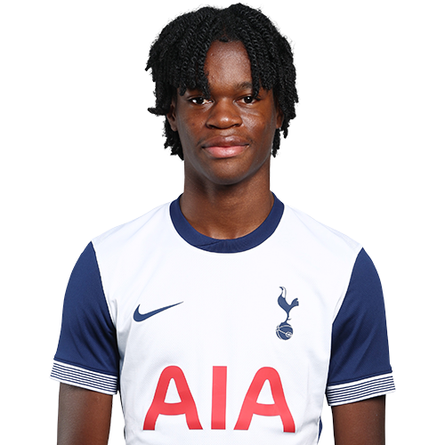

PITCHKEEP
Premier League ranks
Player File · MID TOT · Premier #334

Callum Olusesi
MID · Spurs · £4.5m
2025/26 Premier League
| Year | Starts | Min | G | A | xG | xA | CS | GC | Bonus | YC | Sleeper | FPL |
|---|---|---|---|---|---|---|---|---|---|---|---|---|
| 2025/26 | 0 | 14 | 0 | 0 | 0.0 | 0.01 | 0 | 0 | 0 | 0 | 0 | 1 |
Plus
- Consensus 214.0 vs Sleeper #386 — the industry still believes more than 2025/26 counted.
Minus
- Board spread 214–398 (FPL Ownership to FPL 2025/26 Points).
PitchKeep Take · The Premier
Callum Olusesi is a midfielder for Spurs, £4.5m. The Premier ranks him 334th overall by splitting Sleeper BPL 2025 (#386, 0.0 points) with the consensus of 2 other boards (214.0). The industry still has him 172 spots ahead of the 2025/26 Sleeper count. The Premier pays that reputation something, not everything. Brand does not outrun a down year, and a down year does not erase a player Spurs still builds around.
The 2025/26 Premier League line is 0 starts and 14 minutes, 0 goals and 0 assists, 0 tackles and 0 CBI. Official FPL scored it at 1 points (1.0 per match). Sleeper's table turned the same counting stats into 0.0. Midfielders get 9 a goal, 6 an assist, and 1 a clean sheet, plus a full tackle/CBI stream. That is why a six who plays every week can outrank a ten-goal winger who sits.
Underlying: 0.0 xG, 0.01 xA, 0.01 xGI. Role at Spurs is the 2026/27 question sitting under the 2025/26 number. 0 starts is a starter. Anything under 25 starts is a rotation warning we already priced. Minutes are the skill that survives a finishing regression. The friendliest board is FPL Ownership at 214; the coldest is FPL 2025/26 Points at 398.
Market: £4.5m, 3 boards on the file. Price is the FPL tax, not the rank. The Premier is who produced and who the boards still believe. FPL's own EP-next is 1.0. ICT 0.2.
Instruction: he is on the 400, which is already a statement, and he is not a star. Stash in Sleeper if the minutes are real. Do not let a Pitch screenshot make you start him over a Premier top-80. Nearby on The Premier: Arnaud Kalimuendo, Dilane Bakwa, Bradley Burrowes. Versus The Pitch (Sleeper-only #386), the hybrid moves him up to #334. That move is the third list doing its job.
How to use the file: The Pitch is the Sleeper-only 400 (he is #386 there). The Premier is the 50/50 with every other board we track. Attack, Midfield, Defence, and Keepers re-rank the same Sleeper table by position. BK Value on this page follows The Premier when you are on the hybrid calculator and The Pitch when you are on the Sleeper calculator. Same curve either way — 12,000 at 1.01. Unranked sources are skipped, never treated as 999, which is why a player missing from Yahoo's XI is not secretly ranked 400th.
Board graph
Spread 214–398 · 3 sources
Tape · 2025/26 Premier League
Callum Olusesi - A Talent You NEED to Know - 2026ᴴᴰ
Every Board
Spread 214–398 · 3 sources
| Source | Rank |
|---|---|
| FPL Ownership | 214 |
| Sleeper BPL 2025 | 386 |
| FPL 2025/26 Points | 398 |
On The Premier nearby — Arnaud Kalimuendo (#332) · Dilane Bakwa (#333) · Bradley Burrowes (#335) · Wilson Odobert (#336)
All players · The Premier · The Pitch · Calculator · PK News